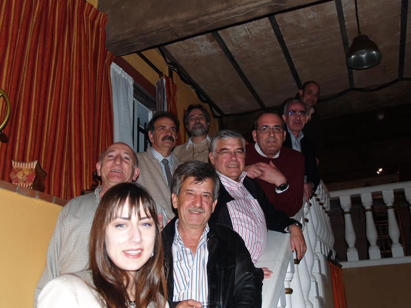

Encuentro en Santoña
Anterior
|
Inicio
|
Siguiente

Si es que no me negaréis que se les ha cambiado la cara y hasta están más guapos... Ha tenido que venir una compañera para que se obrara el milagro